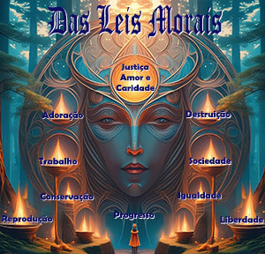

-

Parte Primeira: Das Causas Primárias
Onde estão inseridas as questões sobre Deus (a causa primeira de todas as coisas) e os elementos gerais do universo: espírito e matéria. Quanto à matéria, Kardec deixa o seu estudo com as ciências ordinárias. A respeito de Deus, os Espíritos encarregados da Codificação (questões 10-14) esclarecem que a plena compreensão de Deus somente será possível àqueles que já atingiram a perfeição. Por essa razão, escolhe o Espírito como objeto de estudo do Espiritismo.
-
Parte Segunda: Do Mundo Espiritual
Kardec, tendo definido o Espírito como o objeto de estudo da Doutrina Espírita, nas questões 76 a 613, além de estudar a origem e natureza dos Espíritos, o perispírito e as diferentes ordens de Espíritos, analisa as seis situações em que se pode encontrar o Espírito: 1º – em trânsito para o mundo físico (encarnação); 2º – retornando para o mundo espiritual (desencarnação); 3º – vivendo no mundo espiritual; 4º – vivendo no mundo físico; 5º – estando encarnado e interagindo com o mundo espiritual (emancipação da alma durante o sono físico) e; 6º – do mundo espiritual influenciando os encarnados. Também dedica dois capítulos (IV e V) para abordar a pluralidade das existências, apresentando sua argumentação contra os opositores da idéia da reencarnação. Reserva um capítulo para abordar as ocupações e missões dos Espíritos e, por fim, conclui essa parte analisando os três reinos, estágio em que o princípio inteligente, que ainda não se tornou Espírito, anima os seres dos reinos inferiores da criação (mineral, vegetal e animal). Kardec quando se refere a espírito, no sentido de princípio inteligente, grafou a palavra com “e” minúsculo para diferenciá-la do ser já individualizado, que, a partir da segunda parte, passa a ser escrita com a letra “E” maiúscula.
-

Parte Terceira: Das Leis Morais
No primeiro capítulo, Kardec analisa as questões relacionadas com a Lei Divina. Nos capítulos II ao XI vai demonstrar quais são as Leis, didaticamente separando-as de acordo com os deveres do homem para com Deus (Leis de Adoração e do Trabalho); para consigo mesmo (Leis Reprodução, Conservação e Destruição) e para com o próximo (Leis de Sociedade, Progresso, Igualdade e Liberdade). Por último relaciona aquela que representa o resumo de todas as Leis: Lei de Justiça (dever diante de Deus), Amor (diante de si mesmo) e Caridade (deveres para com o próximo). Finalizando essa parte, no capítulo “Da perfeição moral”, vai apresentar o modo de praticar essas Leis.
-
Parte Quarta: Esperanças e Consolações
São abordadas as conseqüências, para o Espírito, do cumprimento ou não das leis: quando estiver vivendo no mundo corporal terá as “Penas e gozos terrenos” (Cap. I) ou“Penas e gozos futuros” (Cap. II) quando estiver vivendo no mundo espiritual.